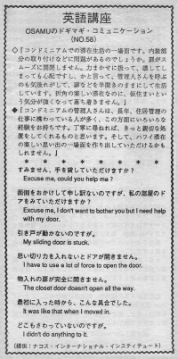

扉がスムーズに開閉しません。
In the condominimum, there was something wrong with the indoor furnishings. The door couldn't close smoothly, the drain was stuck and so on. If he tried to force the door to open or push it too hard it might break. Also, he didn't want to call the maintenance man. He kept the door halfway open during his whole stay there. He didn't feel as comfortable as he would feel if he were at home. If Americans are renting a place and something is not right, they will be quick to complain. It's the landlord job to fix everything.
コンドミニアムでの滞在生活の一場面です。内装部分の取り付けなどに問題があるのでしょうか。扉がスムーズに開閉しません。力まかせに扱って、壊してしまっても心配ですし、かと言って、管理人さんを呼ぶのも気後れがして、扉などを半開きのままにして生活しています。折角の楽しい滞在なのに、仮住まいという気分が強くなって落ち着きません。
コンドミニアムの管理人さんは、長年、住居管理の仕事に携わっている人が多く、この方面にいろいろな経験をお持ちです。丁寧に尋ねれば、きっと親切な処置をしてくれるものと思います。そして、ハワイ滞在の楽しい思いでの一場面を作り出していただけるかもしれません。
すみません、手を貸していただけますか。
Excuse me, could you help me?
面倒をおかけして申し訳ないのですが、私の部屋のドアをみていただけますか。
Excuse me, I don’t want to bother you but I need help with my door.
引き戸が動かないのですが。
My sliding door is stuck.
思いっ切り力を入れないとドアが開きません。
I have to use a lot of force to open the door.
物入れの扉が完全に開きません。
The closet door doesn’t open all the way.
最初に入った時からこんな具合でした。
It was like that when I moved in.
どこもさわっていないのですが。
I didn’t do anything to it.

| © 1995-2013 NACOS International Institute. All Rights Reserved. |